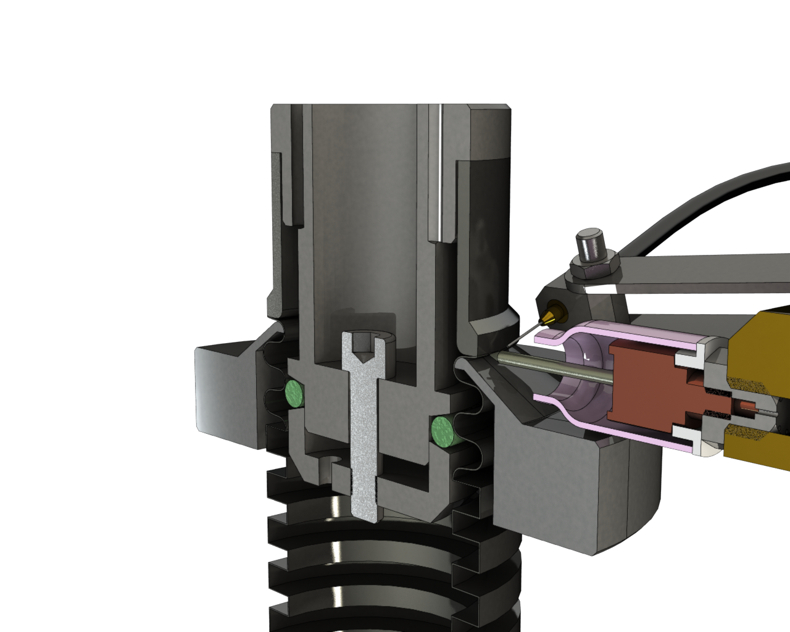
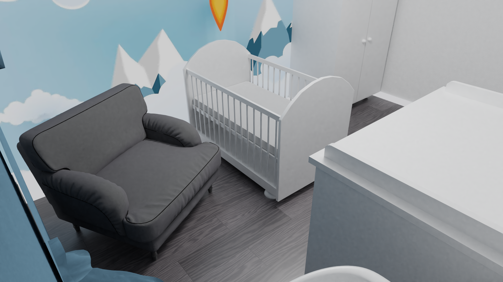
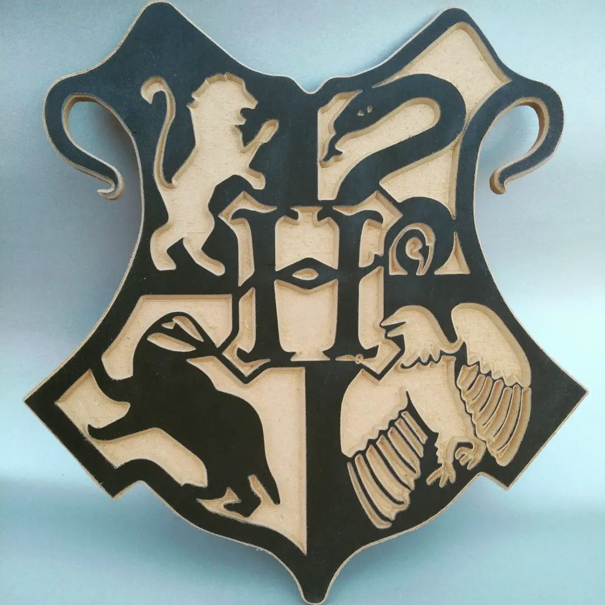
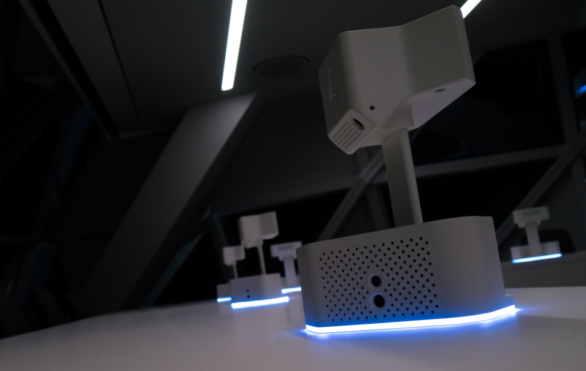
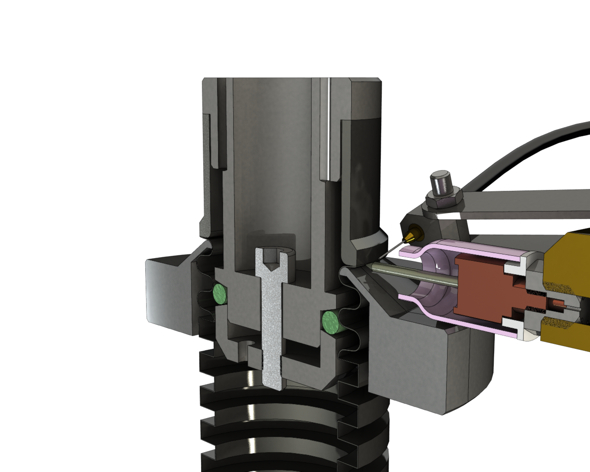
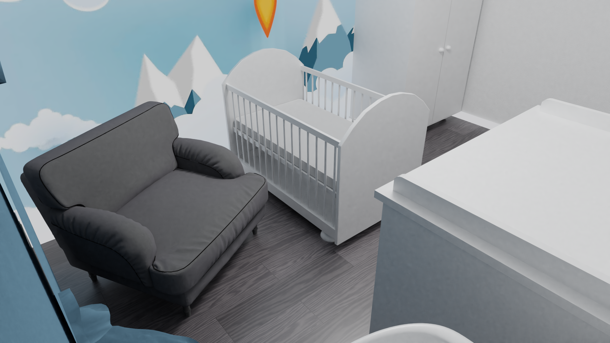
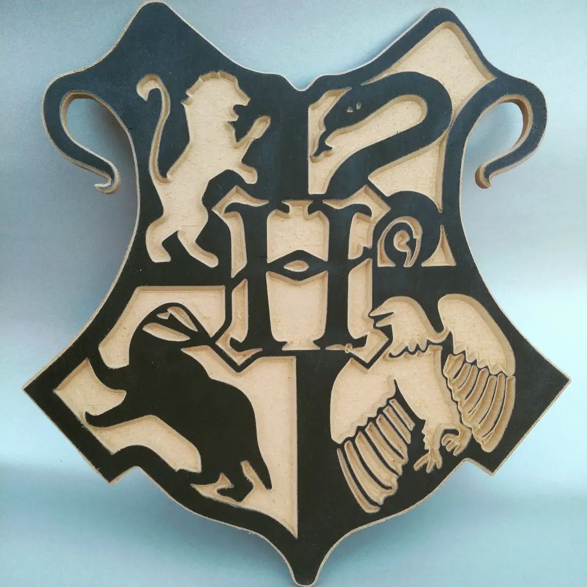
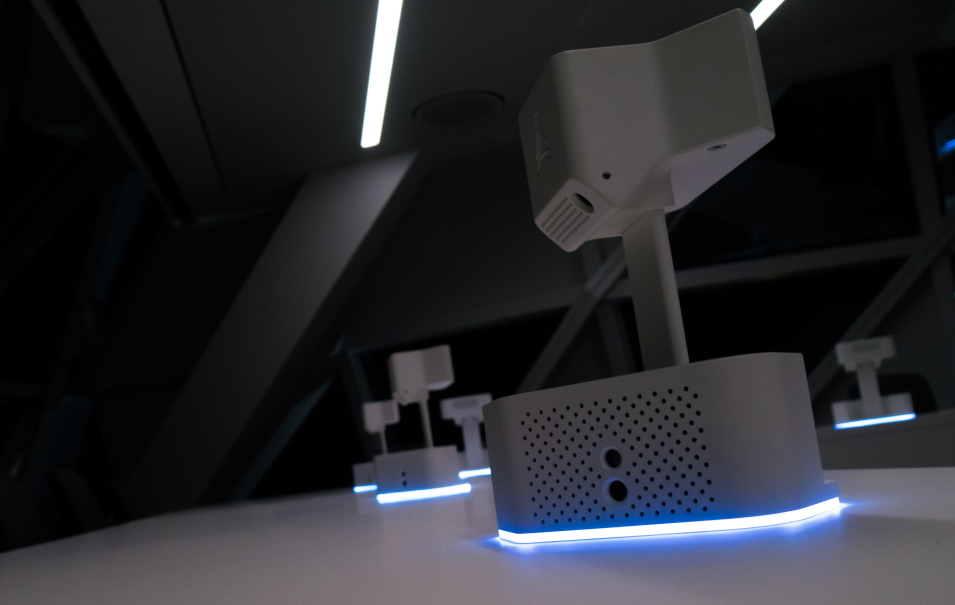

As a creative engineer I like too tinker. Designing all kind of cool/weird/complex designs.
Tinkering on the computer designing using different CAD programs.
But not only mechanical, I also work with electronics using arduino and ESP32. Programming them and building awesome designs with it.
But then again being a mechancial engineer for 15 years resulted that I have used a lot of different CAD software, my current favorite is FreeCAD, Freecad has CAM and FEM and is parametric.
It is only has some stability issieus that need to be adressed before going mainstream, but can easily be used for small projects.
I have also worked a lot with Solidworks, Solid-Edge, Fusion360, Inventor and Autocad.
Ranging from Pro/e too Autocad from Teamcenter too Solidworks PDM. Doing CAM/FEM/Motion.
But sometimes you want to go more organic or just go for the nice renders, then my weapon of choice is Blender 3D.
If you design something in 3D, the most fun part is probably seeing it in real life. But what if you cannot make it or want to have an idea on how it looks before spending any more money on it.
Then 3D renders can be a good solution.
I have learned to make beautifull renders in Blender. I also do kinematic and fluid simulations in Blender and animations. There are some examples in the image tab below.
Further more I made an IconPack for Freecad in Blender and this shows that you can even do a lot of 2D work in Blender.
The icon pack is made with a script that renders all icons on a push of a button.
I also made renders for bathrooms, workshops and kitchens.
Next to doing work on my computer I am also a very practical person.
With a resin 3D printer, a FDM 3D printer and a CNC machine.
I use these to build all kind of fun and practical designs, almost always my own designs.
For the CNC I use Freecad and ESTLcam as CAM software.
Further I have an electronics desk where I can solder my own electronics. I have used it to build multipe 3D printers and my CNC.
I also do some more funny projects like building a lightsaber and a camera rail and a arcade cabinet.
On the internet I keep in touch with my fellow makers true Twitter as MisterMaker.


 



Please mail me if you want to know more.




Please mail me if you want to know more.